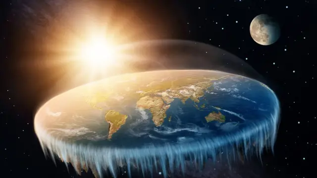

O Mundo Não é o Globo Que Lhe Disseram
E se eu te dissesse que toda a sua vida é baseada em uma mentira fundamental? E se o planeta que você chama de lar não for uma bola giratória voando pelo espaço infinito, mas sim um PLANO ESTACIONÁRIO e fechado? Não é teoria. É a VERDADE - a verdade que "Eles" (os globalistas, a NASA, os governos) desesperadamente tentam esconder de você.
Por séculos, fomos ensinados a confiar na "ciência" oficial. Fomos mostrados imagens geradas por computador (CGI) de um "planeta azul". Mas onde estão as fotos reais? Por que voos comerciais evitam os polos? Por que a água está sempre... PLANA?
A "ciência" mainstream ensina que vivemos em uma esfera. Mas isso é uma MENTIRA para nos fazer sentir insignificantes. A verdade é muito mais simples e muito mais lógica.
Pense nisso: por que todas as imagens "oficiais" da Terra da NASA são admitidamente "composições artísticas" (CGI)? Por que pilotos de longa distância têm que corrigir suas rotas como se estivessem voando sobre um plano, e não sobre uma esfera?
A mentira é sobre CONTROLE. Se você acredita que é um acidente cósmico em uma bola insignificante, você é fácil de controlar. Se você descobre que está no centro de uma criação plana e proposital, você se torna poderoso.
Você já ouviu falar da Operação Highjump? O Almirante Richard E. Byrd liderou uma expedição militar massiva à Antártica. Oficialmente, era uma "missão científica". Mas por que enviar 4.700 homens, 13 navios e porta-aviões para "estudar pinguins"?
Byrd retornou prematuramente, visivelmente abalado, e foi silenciado. Ele teria dito em uma entrevista que encontrou "uma terra vasta além do polo, um continente misterioso". Essa terra? O que está ALÉM da muralha de gelo.
Em 1959, no auge da Guerra Fria, todas as nações mais poderosas do mundo (EUA, Rússia, etc.) de repente concordaram em assinar o Tratado da Antártica.
Este tratado proíbe qualquer exploração militar OU PRIVADA da Antártica. Você e eu não podemos simplesmente ir lá e explorar. Por quê? O que eles estão guardando? Eles não estão protegendo um continente; eles estão GUARDANDO A MURALHA.
Quem nos esconde a verdade? Uma cabala de elites globalistas e sociedades secretas.
A maior agência de propaganda do mundo. Seu único propósito é perpetuar a mentira do globo e do "espaço sideral" para justificar seu orçamento bilionário e esconder a verdadeira natureza do nosso mundo (e o Criador).
Eles sabem a verdade. Eles usam o modelo da Terra Plana para seus próprios cálculos e viagens, enquanto riem do público que acredita em suas mentiras.
Simples. Se a humanidade descobrisse a verdade, toda a estrutura de poder entraria em colapso. Imagine:
Os poderosos da superfície SABEM a verdade. É por isso que a Antártica é militarizada. É por isso que civis não podem explorar livremente. É por isso que a NASA nunca mostra uma foto real.
A mentira não pode mais ser contida. A internet permitiu que a verdade se espalhasse. Milhões de pessoas ao redor do mundo estão acordando. Elas estão fazendo seus próprios experimentos.
Eles estão vendo que a água está nivelada. Eles estão vendo que o horizonte sempre sobe ao nível dos olhos. Eles estão questionando. O tempo deles está acabando.
A maior prova está disponível para qualquer um. Vá à praia. Use um laser. Use um balão de alta altitude. Não importa o quão alto você vá, o horizonte SEMPRE sobe até o nível dos seus olhos. Não há curvatura. Em um globo, o horizonte deveria cair.
Observe as rotas de voos no hemisfério sul. Um voo de Santiago, Chile, para Sydney, Austrália, deveria ir reto sobre o Pacífico. Em vez disso, ele faz uma parada em Los Angeles. Por quê? Porque no mapa da Terra Plana, essa rota (passando pelos EUA) é uma LINHA RETA.
Passamos a vida olhando para "cima", procurando respostas em um falso espaço sideral, quando a verdade está DIANTE DOS NOSSOS OLHOS. A Terra não é um globo. É real. É plana. É estacionária.
Os governos sabem. As elites sabem. A NASA sabe. E agora, VOCÊ sabe. A questão é: o que você fará com esse conhecimento?
O DESPERTAR É INEVITÁVEL.
Se você sente uma atração inexplicável pelo horizonte... se o "espaço" lhe parece falso... se você sempre sentiu que algo estava fundamentalmente ERRADO com o mundo...
Você não está louco. Você está ACORDANDO. Ouça esse chamado. A verdade está esperando. Pesquise por si mesmo.